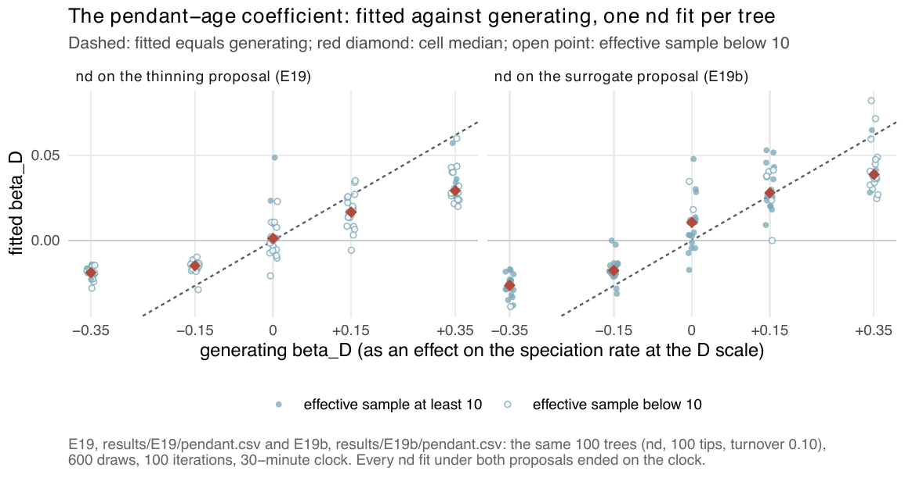

D: the centred pendant age
In one line. \(D_s(t)\) is how much longer lineage \(s\) has gone without splitting than the average lineage alive with it, and its coefficient asks whether a lineage's rate depends on that age: age-dependent and protracted speciation, and on the extinction side Van Valen's law.
\(D\) is a lineage-level covariate that sums to zero over the lineages alive, so it says which lineages split, never how fast the clade does. It is fitted alone in d and beside N in nd. It reads the same pendant edge as ED, and the two are not apportioned on trees of the sizes measured; the covariates page sets the four side by side.
The question in the literature
Since Yule (1925) the default model of a diversifying clade has been memoryless: every lineage speciates at the same instantaneous rate whatever its age, and Nee et al. (1994) built the standard likelihood of a reconstructed tree on that assumption. Under it a lineage that split a million years ago and one that has not split for fifty million have the same rate. Kendall (1948) already treated a birth process with a variable generation time. Two families of reconstructed trees resist the memoryless model: most slow down toward the present (the negative \(\gamma\) statistic of Pybus and Harvey 2000), and many hold long, unsplit terminal branches.
The modern forms of an age effect are two, and they point in opposite directions. Protracted speciation says that a new lineage cannot speciate again until speciation itself has completed, a delay of the order of a million years in birds and mammals (Rosindell et al. 2010; Etienne and Rosindell 2012; Etienne et al. 2014; Lambert et al. 2015). It predicts a rate that rises with age over the first part of a lineage's life, and it reproduces the observed slowdowns because the youngest lineages of the tree have not finished becoming species. Age-dependent speciation in the sense of Hagen et al. (2015) is a rate that falls with lineage age, motivated by new lineages that colonise new regions or niches with little competition; fitted to thousands of TreeBASE trees, that model reproduced the imbalance of empirical trees, which the Yule model does not.
On the extinction side the reference is Van Valen's law: the probability that a taxon goes extinct does not depend on its age, reviewed from populations to communities by Liow et al. (2011). Alexander et al. (2016) built the likelihood for gamma-distributed species lifetimes on a reconstructed tree and found age dependence in birds and in nightshades. Hagen et al. (2018) found in the fossil record of Carnivora that extinction is highest in young species and declines with age, while the same model on the dated phylogeny of extant Carnivora gave the opposite direction; Finnegan et al. (2008) found the fossil direction, risk highest in the youngest cohorts, in Phanerozoic marine genera.
What the package computes
Let \(\tau_s(t)\) be the pendant start of lineage \(s\): the time of its birth or of its latest split, whichever is later. The pendant age \(E_s(t) = t - \tau_s(t)\) is the length of the lineage's current terminal edge, and \(M(t)\) is its mean over the \(N(t)\) lineages alive. Then
\[ D_s(t) = E_s(t) - M(t), \qquad \sum_{s \in A(t)} D_s(t) = 0 . \]
\(D\) has units of time (million years on a tree dated in million years). Between two consecutive events every pendant age and their mean grow at unit rate, so on a segment \(D_s = \bar\tau - \tau_s\), the mean pendant start of the alive lineages minus the lineage's own, is constant. The package holds it constant: the simulator reads it so, and since commit 4e0b9dd the likelihood reads the same value on the whole segment, charging the event that ends the segment with the \(D_s\) the segment started with. \(D\) therefore changes only at events, and at every event it changes for every lineage alive, since each split or death moves \(\bar\tau\): a lineage that splits restarts its pendant age, so both daughters start with \(E = 0\) and \(D = -M\), and the others shift up.
Three properties shape what \(D\) reads.
- It is read on the complete tree. The pendant start restarts at every split, observed or hidden. A lineage whose observed terminal branch is 20 million years long may have split 3 million years ago into itself and a daughter that died or was not sampled; on the complete tree its pendant age is 3. The model's \(E_s\) at the present is therefore at most the observed terminal branch, and how far below depends on the extinction rate and the sampling fraction through the hidden lineages drawn.
- It is centred. The clade mean \(M(t)\) is the pendant phylogenetic diversity per lineage, a clade-level quantity that changes as the clade ages and as \(N\) moves. Centring removes it, so a \(\beta_D\) term does not change the clade's total speciation rate at any instant, only its distribution over lineages. A clade-wide age effect, such as a protracted delay that holds every lineage back equally early in a radiation, is absorbed by \(\beta_0\) and \(\beta_N\).
- It needs a topology only to locate splits. From a bare vector of branching times the package records every observed lineage as dating from the crown and reads \(D = 0\) at every observed event; a \(D\) fit needs a
phyloobject to mean anything.
At the tips of a reconstructed tree \(E\) is the terminal branch length. That is the quantity the DR tip-rate statistic inverts, weighting the terminal branch most (Jetz et al. 2012; Title and Rabosky 2019), and the first term of fair-proportion distinctiveness (Isaac et al. 2007). \(D\) is not distinctiveness: \(\mathrm{ED}_s\) adds to \(E_s\) the lineage's shares of every branch above it, while \(D_s\) reads the terminal edge alone and centres it. The two agree on a lineage alone on a long branch and disagree on a lineage with a short terminal edge that sits on a long, little-shared ancestral branch.
What the sign of a coefficient means
Speciation. A positive \(\beta_D\) says that the lineages that have gone longest without splitting are the most likely to split next: an age advantage, the protracted-speciation direction over the ages at which the delay acts, or opportunity accumulating with isolation. A negative \(\beta_D\) says that recently split lineages split again sooner than their older contemporaries, the direction Hagen et al. (2015) fitted, in which diversification is concentrated in young radiations and old lineages are quiescent. Zero is the memoryless null.
Extinction. \(\gamma_D = 0\) is Van Valen's law. A positive \(\gamma_D\) is senescence of lineages; a negative one is the direction found in fossil Carnivora (Hagen et al. 2018) and in marine genera (Finnegan et al. 2008), extinction highest in the youngest lineages.
What else produces the same sign. A negative \(\beta_D\) is also what a process with inherited rates produces without any effect of age: a lineage that split recently is one whose ancestry carries a high rate, and its next split comes soon for that reason. Age-dependent and heritable speciation are hard to separate on one tree; the K page takes up the heritable reading. Protracted speciation is a two-stage process that a single slope in \(E\) approximates, worst at the youngest ages, where the true rate is zero. And because the model's pendant age at the present is shortened by hidden splits, the fitted extinction rate and the sampling fraction act on \(D\) through the augmentation: a model that draws more hidden splits draws shorter pendant ages.
What D cannot be separated from
ED, through the shared pendant edge. Within one tree at one time \(D\) has the ranks of the pendant age, and \(\mathrm{ED}\) starts from the same edge. E39 measured the Spearman correlation of each pair within a tree, over the lineages alive at half, three quarters and all of the crown age:
| pair | simulated dd clades, complete (30) |
the same, reconstructed | 47 family trees |
|---|---|---|---|
| \(D\) and ED | 0.57 | 0.62 | 0.74 |
| \(D\) and nearest-neighbour distance | 0.85 | 0.88 | 0.90 |
| \(D\) and \(K\) | \(-0.34\) | \(-0.35\) | \(-0.46\) |
The distance to a lineage's nearest living relative is twice its pendant age whenever its sister is alive, so a model on that distance, the lineage-scale relatedness of Qin et al. (2025), is close to a pendant-age model. On the covariate path at 100 tips a generator with both \(D\) and \(\mathrm{ED}\) effects returns \(D\) alone on 0.80 of trees and both on 0.15 (E20); on ned trees \(D\) enters the path more often as trees grow, until at 400 tips it is the first covariate on 19 of 20 trees generated with no \(D\) effect (E22). These paths read \(D\) at the segment midpoint, as the package did before 4e0b9dd; E47 reruns them. At 200 tips the ladder, with nd fitted under the likelihood before 4e0b9dd, chooses nd on 5 of 20 trees generated by nd and ned on 4, so the two readings of the edge divide the signal about evenly (E31; E46 and E47 remeasure it). A comparison of nd against ned on one clade is a comparison of two readings of the same edge; the question that would separate them, whether the ancestral share \(\mathrm{ED} - E\) matters, is asked by a covariate the package does not offer.
Extinction on another covariate. Where the extinction rate rises with \(\mathrm{ED}\), the extinction path, reading \(D\) at the segment midpoint, admits \(D\) instead on 0.50 to 0.70 of trees (E33; E47 reruns it under the current lineage table).

nd at 100 tips, turnover 0.10: fitted \(\beta_D\) against its generating value on the thinning proposal (left) and the surrogate (right). The sign is recovered at every effect of \(\pm 0.15\) and stronger, the size is short. These fits used the likelihood before commit 4e0b9dd, which let \(D\) grow within a segment; E46 remeasures them under the current one. From E19.What simulation says
On complete trees, the likelihood is now the simulator's. With every lineage kept, nothing is hidden, and maximising the complete-data likelihood tests the model alone. Under the likelihood before 4e0b9dd, which held \(M\) at its end-of-segment value so that \(D\) grew within a segment, d returned \(\beta_D\) at 0.70 and 1.46 of its value at \(\mp 0.35\); under the current one at 0.95 and 1.16, with the right sign on every tree, and nd at 1.01 and 0.80, with bootstrap intervals of the medians that contain 1 (E44). The two conventions differ by 0.40 to 1.20 nats per complete tree.
On reconstructed trees, every result predates the change. The following were all fitted under the old likelihood, or read the old \(D\) column on the path; E46 remeasures recovery and E47 selection and the path:
ndat 100 tips recovers the sign of \(\beta_D\) at every effect of \(\pm 0.15\) and stronger; the size at \(\mp 0.35\) is 0.30 and 0.47 of its value on thinning and 0.43 and 0.63 on the surrogate, on fits cut at 30 minutes (Figure 1; E19). With 300 iterations and a four-hour clock it is 0.67 at \(-0.35\) and 0.80 at \(+0.35\), the second cell sampler-limited; 0 of 39 fits met the stopping rule, andndbeatddon 19 of 19 trees at \(-0.35\) (E30). 700 further iterations moved \(\beta_D\) by \(-0.04\) to \(+0.03\) of its value on three trees before the run was stopped (E37).- In the ladder at 100 tips
ndis chosen on 0 of 10 of its own trees,ddon 7 (E23); at 200 tips on 5 of 20, with \(\beta_D\) at 0.68 of its value whether the fits ran a quarter of their iterations or all 300 (E31). dalone recovers \(\beta_D\) at 1.01 at \(+0.35\) and 0.67 at \(-0.35\), and on trees with no age effect beatscron 0.15 of them, three times the ceiling, through an extinction slope on \(D\) fitted at \(+0.36\) per unit that the generator did not have (E24). A \(\gamma_D\) from a single clade is not to be read as Van Valen's law or its opposite.- On the path, \(D\) is falsely added on 0.20 to 0.35 of
ddtrees from 50 to 400 tips (E20, E22).
The \(D\) models are the ones the sampler handles worst: thinning is their default proposal, the surrogate gave the larger effective sample but failed its pre-set adoption rule under the old likelihood (E19; E46 applies the rule under the current one), and most nd fits end with fewer than 10 effective draws or on their clock. E44 shows that part of the shortfall in size was the likelihood; how much remains is what the d and nd cells of the conditioned estimability study will measure (Estimability).
What real phylogenies say
The 46 family trees. Of the 24 families of the calibrated range whose minimum-AIC fit is readable, nd is the parsimonious choice in 1, the honeyeaters (Meliphagidae), and the minimum-AIC choice in the same one (E28); in the merged 46-family table it is the minimum-AIC lineage-level winner in 2, the honeyeaters and the petrels (Procellariidae, whose \(\beta_D\) is on the lower edge of its box) (E26). The pendant-age coefficient is negative in 28 of the 30 nd fits that rest on at least 10 effective draws with \(\beta_D\) off its box edge, with a median speciation factor of 0.69 per standard deviation of \(D\) (0.38 to 1.06), under the current likelihood (E48).
The 170 bird and mammal trees. nd is the parsimonious choice on 8 trees and readable on 5. Over the 109 readable nd fits with \(\beta_D\) off its box edge, \(\beta_D\) is negative on 92 and the median factor is 0.78 per standard deviation (0.37 to 1.72) (E48, E40, Real phylogenies). 57 of the 170 nd fits are not read, because their final effective sample is below 10 or they ended on the four-hour clock (25 nd fits did); 7 of 170 met the stopping rule. On the pairs of trees of the same taxon where both nd fits are read, the factor falls on the same side of 1 on 8 of 9. On the 16 smallest trees, continued to 1,000 iterations and 2,400 draws, no nd fit met the stopping rule (E41). The covariate path, reading \(D\) at the segment midpoint as the package did before 4e0b9dd, reads the pendant edge as one signal: it keeps \(D\) and \(\mathrm{ED}\) together on 144 of the 170 trees, \(D\) without \(\mathrm{ED}\) on none, and \(D\) is the first covariate to enter on 49.
Not yet read. The real-tree fits are unconditioned on survival and only 7 of the 217 nd refits met the stopping rule, so the sign rests on fits that did not finish. A negative \(\beta_D\) is also what inherited rates produce without any effect of age, and \(D\) and ED share the pendant edge, so a sign is not a mechanism. The d and nd cells of the estimability study (E46), which measure the accuracy of nd on reconstructed trees under the current likelihood, have not run. \(\gamma_D\), the term that would speak to Van Valen's law, is not read: 42 of the 145 read refits hold it on a box edge, and extinction slopes on real trees run to their edges for no gain in likelihood (E41).
References
- Yule G.U. (1925). A mathematical theory of evolution, based on the conclusions of Dr. J. C. Willis, F.R.S. Philosophical Transactions of the Royal Society B 213, 21–87. doi:10.1098/rstb.1925.0002
- Kendall D.G. (1948). On the generalized "birth-and-death" process. The Annals of Mathematical Statistics 19, 1–15. doi:10.1214/aoms/1177730285
- Nee S., May R.M. and Harvey P.H. (1994). The reconstructed evolutionary process. Philosophical Transactions of the Royal Society of London B: Biological Sciences 344, 305–311. doi:10.1098/rstb.1994.0068
- Pybus O.G. and Harvey P.H. (2000). Testing macro-evolutionary models using incomplete molecular phylogenies. Proceedings of the Royal Society of London B: Biological Sciences 267, 2267–2272. doi:10.1098/rspb.2000.1278
- Rosindell J., Cornell S.J., Hubbell S.P. and Etienne R.S. (2010). Protracted speciation revitalizes the neutral theory of biodiversity. Ecology Letters 13, 716–727. doi:10.1111/j.1461-0248.2010.01463.x
- Etienne R.S. and Rosindell J. (2012). Prolonging the past counteracts the pull of the present: protracted speciation can explain observed slowdowns in diversification. Systematic Biology 61, 204–213. doi:10.1093/sysbio/syr091
- Etienne R.S., Morlon H. and Lambert A. (2014). Estimating the duration of speciation from phylogenies. Evolution 68, 2430–2440. doi:10.1111/evo.12433
- Lambert A., Morlon H. and Etienne R.S. (2015). The reconstructed tree in the lineage-based model of protracted speciation. Journal of Mathematical Biology 70, 367–397. doi:10.1007/s00285-014-0767-x
- Hagen O., Hartmann K., Steel M. and Stadler T. (2015). Age-dependent speciation can explain the shape of empirical phylogenies. Systematic Biology 64, 432–440. doi:10.1093/sysbio/syv001
- Liow L.H., Van Valen L. and Stenseth N.C. (2011). Red Queen: from populations to taxa and communities. Trends in Ecology & Evolution 26, 349–358. doi:10.1016/j.tree.2011.03.016
- Alexander H.K., Lambert A. and Stadler T. (2016). Quantifying age-dependent extinction from species phylogenies. Systematic Biology 65, 35–50. doi:10.1093/sysbio/syv065
- Hagen O. et al. (2018). Estimating age-dependent extinction: contrasting evidence from fossils and phylogenies. Systematic Biology 67, 458–474. doi:10.1093/sysbio/syx082
- Finnegan S., Payne J.L. and Wang S.C. (2008). The Red Queen revisited: reevaluating the age selectivity of Phanerozoic marine genus extinctions. Paleobiology 34, 318–341. doi:10.1666/07008.1
- Jetz W. et al. (2012). The global diversity of birds in space and time. Nature 491, 444–448. doi:10.1038/nature11631
- Title P.O. and Rabosky D.L. (2019). Tip rates, phylogenies and diversification: what are we estimating, and how good are the estimates? Methods in Ecology and Evolution 10, 821–834. doi:10.1111/2041-210X.13153
- Isaac N.J.B. et al. (2007). Mammals on the EDGE: conservation priorities based on threat and phylogeny. PLoS ONE 2, e296. doi:10.1371/journal.pone.0000296
- Qin T., Valente L. and Etienne R.S. (2025). Impact of evolutionary relatedness on species diversification and tree shape. Journal of Theoretical Biology 598, 111992. doi:10.1016/j.jtbi.2024.111992